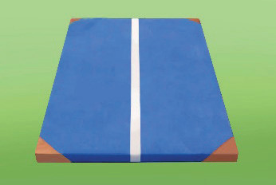
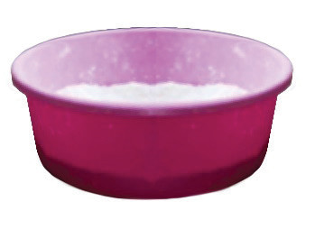
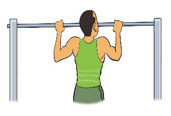

(i)Maintaining overall fitness and avoiding overtraining;
(ii)Practicing techniques that promote injury prevention;
(iii)Supporting mental health and maintaining a balanced training schedule; and
(iv)Encouraging enjoyment of the sport as a foundation for long-term participation and performance.
Activity 4.1
Using what you have learned about safety in gymnastics, observe the facilities and equipment you use during gymnastic practices.
Then, write a short report explaining whether each item is safe or unsafe.
Basic gymnastics facilities and equipment
Basic gymnastics facilities and equipment include the essential spaces and tools used for training and performing gymnastics. These typically consist of a gymnasium with padded flooring or spring floors. Common equipment includes landing mats, gripping powder, balance beams, uneven bars, parallel and horizontal bars, vaults, gloves, pommel horse, rings and personal kit.
| Equipment/ Facility | Illustration | Description |
|---|---|---|
| 1. Landing mats |  | Mats are used to absorb impact and provide a safe landing area for gymnasts performing activities. |
| 2. Gripping powder/ chalk |  | Gripping powder (magnesium carbonate) is used by gymnasts to absorb sweat to improve grip on apparatuses like the horizontal bar, rings, and parallel bars. |
| 3. Horizontal bars |  | Also called the high bar, this is a single metal bar suspended above the ground, used in men’s gymnastics for swinging, release moves, and dismounts. |